点検してから、布の動きを焼く
「安全ベイク」は、対象のクロスを点検してから焼きます。点検でエラーが無ければ、布の動きが記録され、好きなフレームへ飛んでも同じ形が出ます。

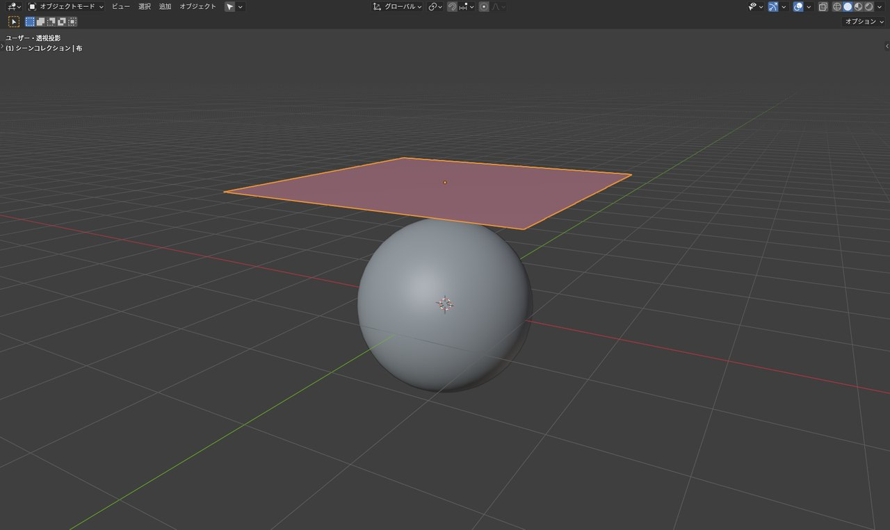

SmartTools アドオン解説書
版 1.0.0 ／ 2026年11月18日 ／ Blender 5.1.2 用
SmartCloth Suite は、別に入れる布シミュレーションのアドオン「Simply Cloth Studio」と組み合わせて使う補助のアドオンです。Simply Cloth Studio の公開されている操作を呼び出し、その前後に、一括の準備、軽い表示への切り替え、衝突の間隔の自動調整、点検（プリフライト）、点検付きのベイクを足します。スカートをボーンで動かすかクロスで動かすかの切り替え、剛体を付ける「Quick Rigid」、骨を揺らす「Jiggle Physics」も同じタブに入っています。品質の調整・点検・「安全ベイク」・スカートの切り替え・Quick Rigid・Jiggle Physics などは、Simply Cloth Studio が無くても使えます。
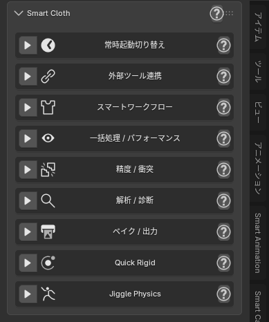
オブジェクトモードの3DビューポートでNキーを押し、「Smart Cloth」タブを開きます。スカートの割り当てを設定するときは「再利用可能なスカート設定」を開きます。
入口全体の図では機能別の見出しが閉じており、各見出しの左の三角で中を確認できます。
この衣服の作例には別途Simply Cloth Studioが必要です。連携欄で使用可能かを確認し、体をコライダーに指定して服を選びます。ベイク前に事前点検の結果を確認します。
事前点検のレポートを開き、エラーがない場合にベイクが完了したか確認します。
ボーンではスカート全体が体についていき、クロスでは腰に続いて裾が遅れます。同じ衣装・同じ時刻で演出を選べます。

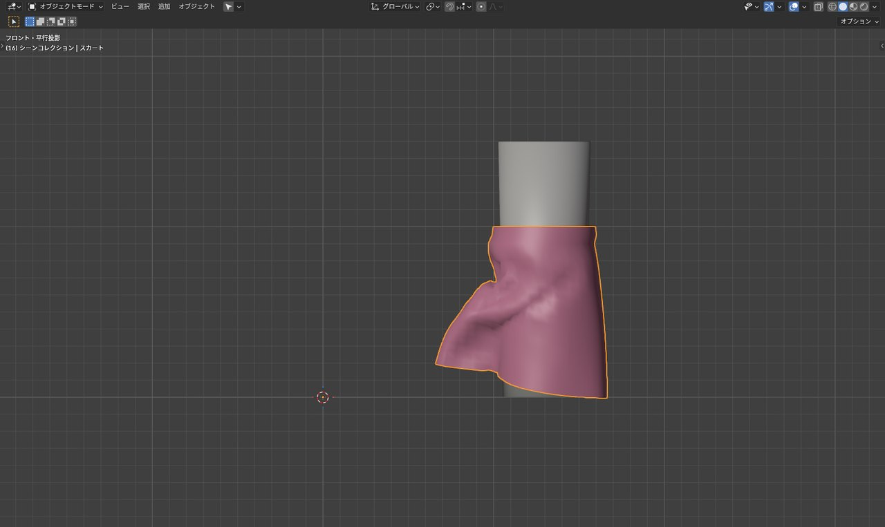
試す前に キャッシュと再生開始フレームを本文の手順に合わせる。
この作例の手順を見る作例を画像で保存 (PNG)導入・トラブルのヘルプ
「安全ベイク」は、対象のクロスを点検してから焼きます。点検でエラーが無ければ、布の動きが記録され、好きなフレームへ飛んでも同じ形が出ます。

読み込んだ服などで、同じ位置に頂点が重なり、面がつながっていないことがあります。「安全なトポロジー補正」は、ほぼ同じ位置の頂点だけをまとめて、面をつなぎ直します。
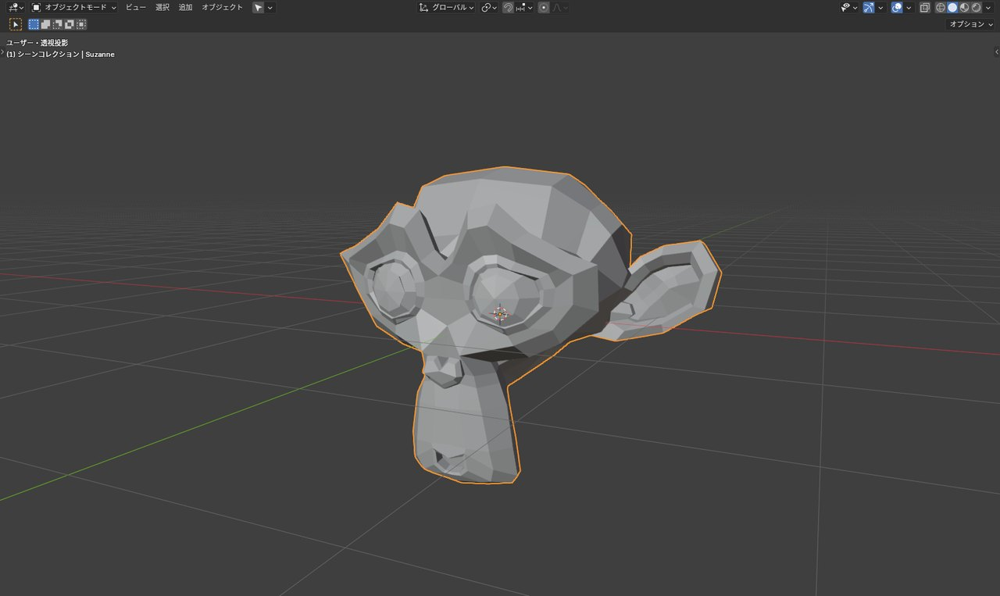
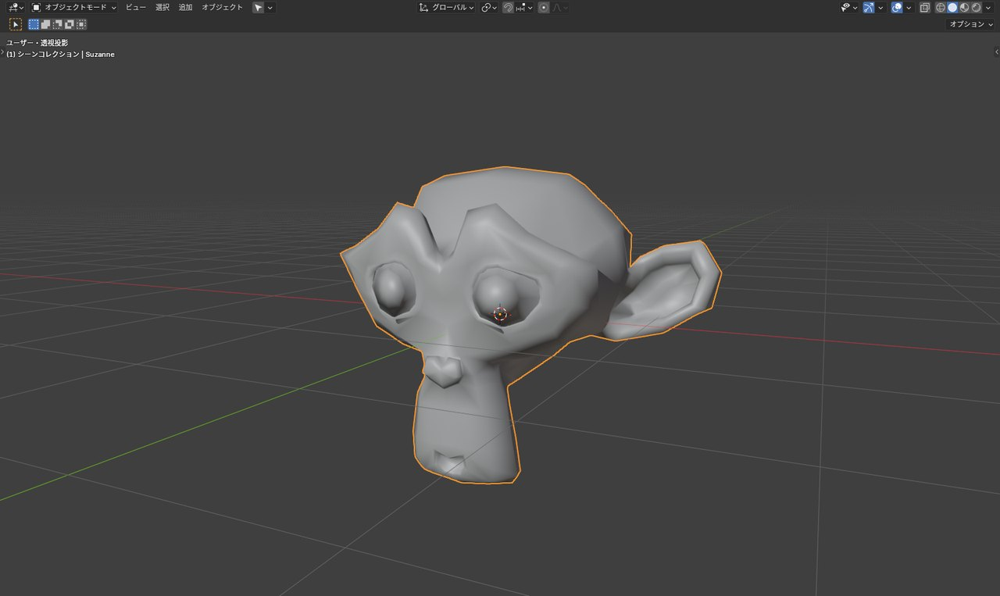
服のクロス（布のシミュレーション）の準備・軽量化・点検・安全なベイクと、剛体（Quick Rigid）・骨の揺れ（Jiggle Physics）を、サイドバーの 1 つのタブでまとめて扱うアドオンです。
このアドオンを使うと、画面は次のように変わります。くわしい操作は 5 章の各機能の「実例」で説明します。
実例積み木に剛体を付けて、床へ落とす（床と 3 つの立方体で試した様子）
立方体を選んで「アクティブを追加」、床を選んで「パッシブを追加」を押すだけで、物理で落ちてぶつかる剛体になります。再生すると、上の立方体が落ちて、下の立方体や床にぶつかります。
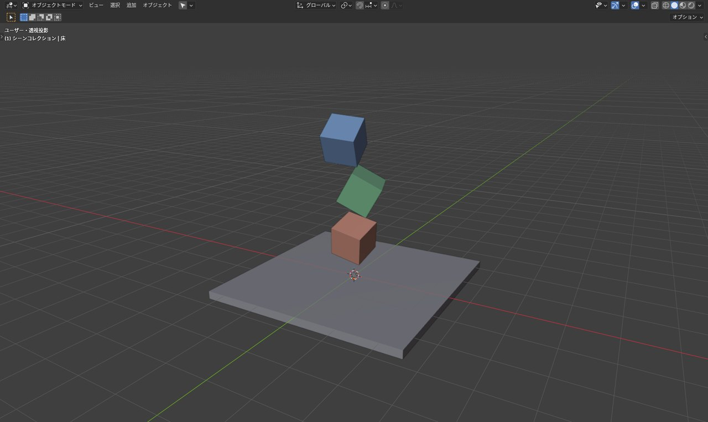
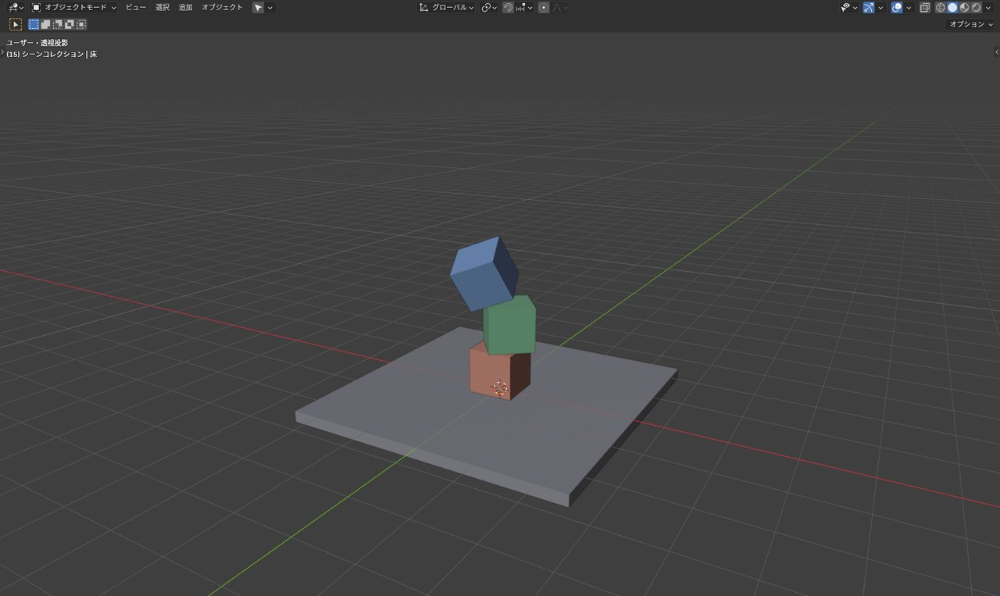

見どころ：フレーム 1 では 3 つの立方体がどれも宙に浮いています。再生すると全部が落ち、赤は床に、緑は赤の上に乗り、青ははじかれて床へ落ちます。床（パッシブ）は動かず、ぶつかる相手になります。
実例頭を動かすと、髪の房が遅れて揺れる（スザンヌの頭と髪の房で試した様子）
骨に揺れを付けると、キーを打っていない骨が、親の動きに遅れてゆれます。ここでは頭だけにキーがあり、髪の房の骨にはキーがありません。
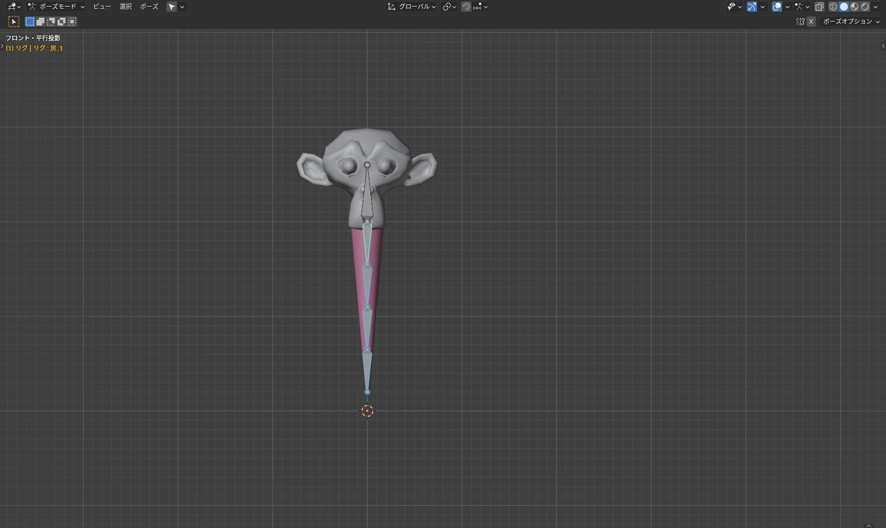
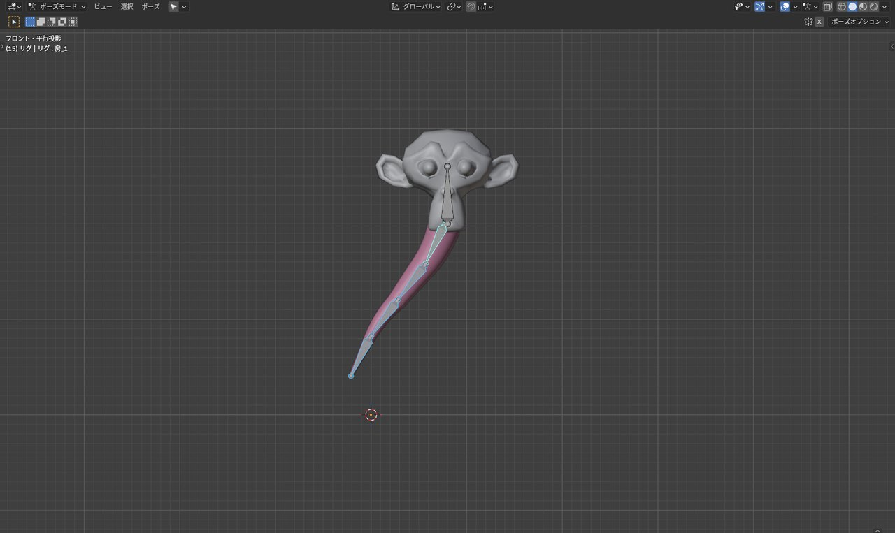
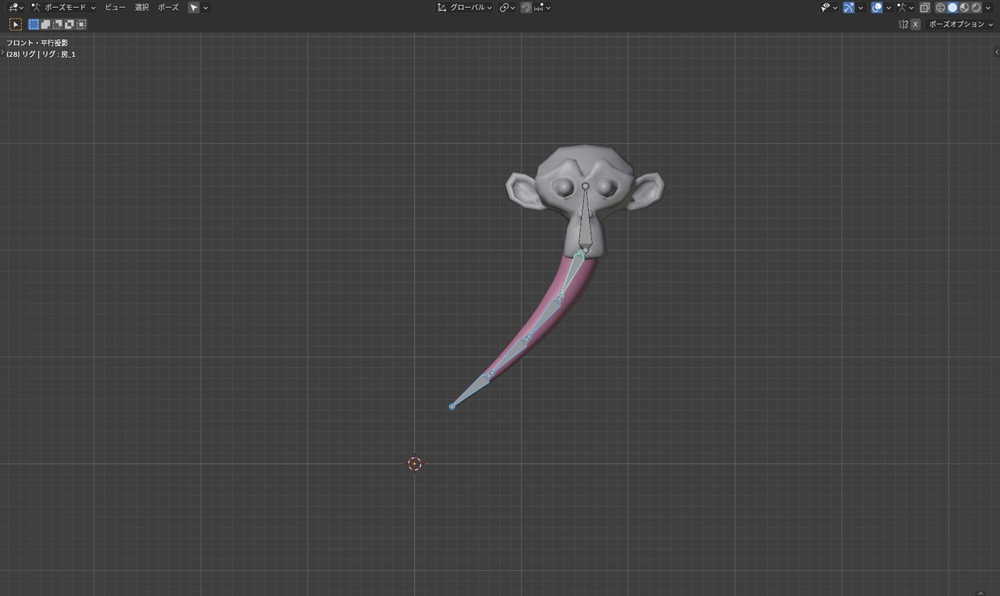
見どころ：止まっている時は房がまっすぐ下がっています。頭が右へ動く間は、房の先が左へ遅れて流れます。頭が止まった後も、房はすぐには戻らず、少しずつ下へ戻って来ます。
このアドオンならではの機能を、図に番号を付けて説明します。図の中の番号と、図の下の一覧の番号が対応しています。図を押すと大きく表示されます。設定の一つ一つは 5 章の各見出しで説明します。
服に布の動きを付けるには、ふつうはクロスの作成・品質の値・衝突の距離・上端の固定（ピン）・体のコライダーを、別々の画面で順に設定します。「スマートセットアップ」は、Simply Cloth Studio のクロス作成と SmartCloth Suite の追加の設定を 1 回の実行でまとめて行い、1 回の Undo で戻せます。すでにクロスのある服は作り直さず、足りない設定だけを足します。
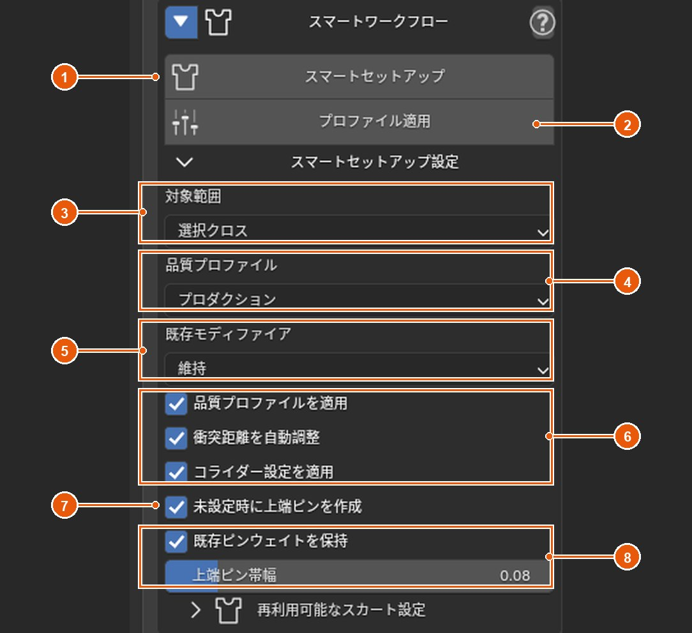
くわしい設定：5-4. スマートワークフロー
スカートを、ボーンで動かす状態と、クロス（布の計算）で動かす状態の間で、ボタン 1 つで切り替えます。ポーズを付ける間はボーンで軽く動かし、仕上げだけクロスで揺らす、という使い分けができます。切り替えてもスキンのウェイトは変わりません。服・アーマチュア・骨の名前は決め打ちせず、ここで割り当てて服に保存するので、別の服にも使い回せます。下の 3 枚は、同じ腰の動きのフレーム 16 を、ボーン・クロス・ボーンに戻した後で比べた物です。

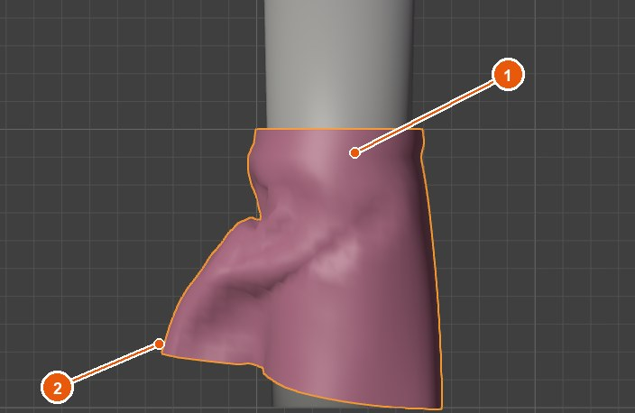

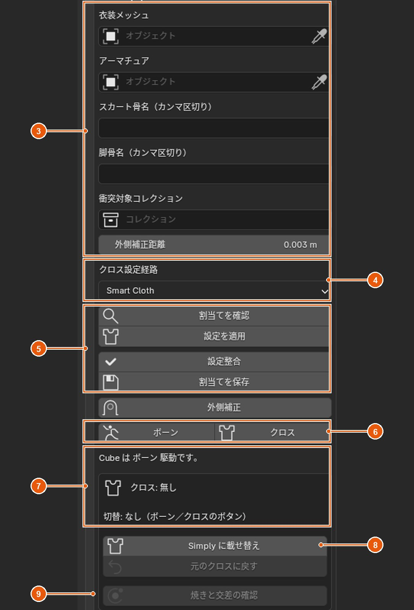
くわしい設定：5-5. 再利用可能なスカート設定
髪の房・尻尾・飾りなどを、動きに遅れて揺らします。揺らしたい骨に印を付けて値を決めるだけで、親の骨の動きに合わせた揺れが再生中に計算されます。キーを打つのは元の骨だけでよく、揺れのキーを手で打つ必要はありません。できた揺れは「Jiggle をベイク」で普通のキーフレームに焼けます。下の 4 枚は、頭にだけキーを打ち、房の骨に重力 0.5・ルート弾性 0.95・長さ弾性 0.95・角度弾性 0.7・空気抵抗 0.2 を入れた例です。

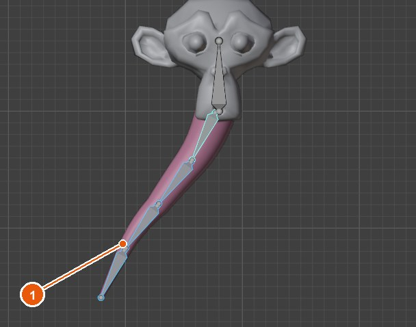
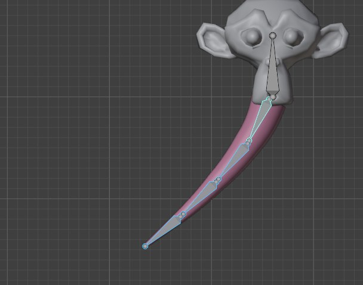
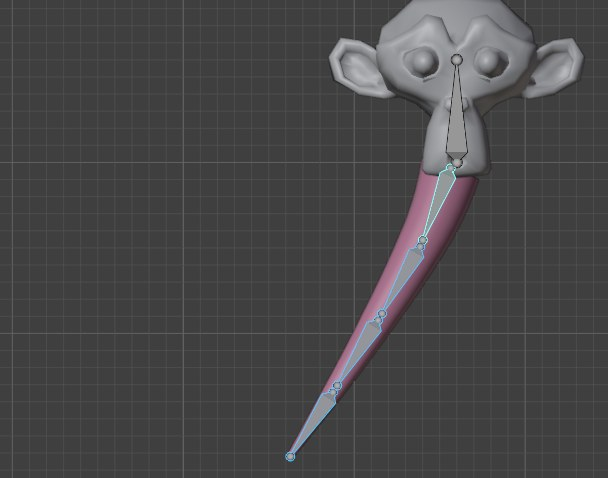
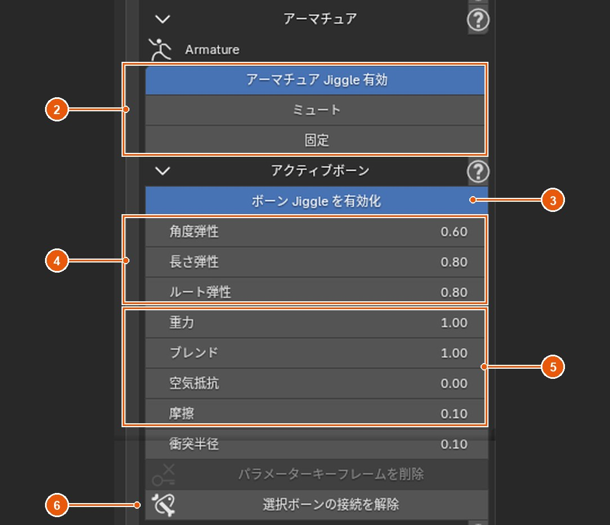
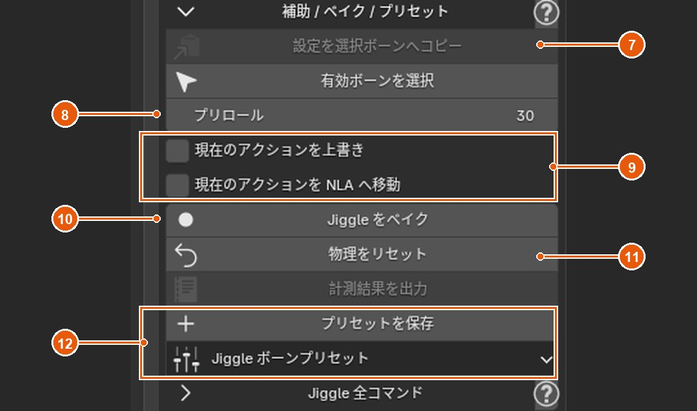
くわしい設定：5-18. Jiggle Physics、5-20. アーマチュア、5-21. アクティブボーン、5-22. 補助 / ベイク / プリセット
アドオンの入れ方・画面を日本語にする方法・N パネルと「？」ヘルプの共通の使い方は、「SmartTools 全体仕様書」にまとめています。先にそちらの 2〜5 章を読んでください。
| 入れる ZIP | SmartClothSuite_1.0.0.zip |
|---|---|
| Blender の画面での名前 | Smart Cloth |
| 動く Blender | 5.1.2 |
3D ビューの右のサイドバー（N パネル）にある「Smart Cloth」タブの中の「Smart Cloth」パネルに、すべての機能がまとまっています。Smart Tools Manager が入っている時は、どのエディターに出すかをその設定で決めます。
| 出る画面 | 3D ビューポート（3D ビュー）、画像エディター・ノードエディター・グラフエディター・ドープシート・NLA・シーケンサー・クリップ・テキスト・ファイルブラウザー・スプレッドシートのサイドバーにも同じパネルを出せます。出すかどうかは Smart Tools Manager の設定で決まります（Smart Tools Manager が無い時は出ます）。 |
|---|---|
| タブ | Smart Cloth |
| モード | 主にオブジェクトモード。「Jiggle Physics」の骨の操作と「クロスから衣装ボーンへ」は、ポーズモード（骨を動かすモード）で骨を選んで使います。 |
画面の上から順に、見出しごとに説明します。見出しの右の「？」を押すと、同じ内容の説明が画面にも出ます。青い枠の「実例」は、スザンヌなどの簡単なモデルで実際に操作し、3D ビューでの変化を前と後で並べたものです。
SmartCloth Suite のすべての機能が入った 1 枚のパネルです。見出しは上から「常時機能切り替え」「外部ツール連携」「スマートワークフロー」「一括処理 / パフォーマンス」「精度 / 衝突」「解析 / 診断」「ベイク / 出力」「Quick Rigid」「Jiggle Physics」の順に並びます。最初はすべて閉じています。
場所3D ビュー > サイドバー > 「Smart Cloth」タブ
| 表示 | 働き |
|---|---|
| 見出しの三角・見出しの名前 | 押すと、その見出しの中身を開いたり閉じたりします。開け閉めは見た目だけで、シーンは変わりません。 |
| ？ | その見出しの説明を小さな窓で出します。 |
裏で動き続ける機能のオン・オフをまとめた所です。Jiggle の揺れの計算は、ここでオンにするまで止まっています。
場所Smart Cloth パネル > 「常時機能切り替え」
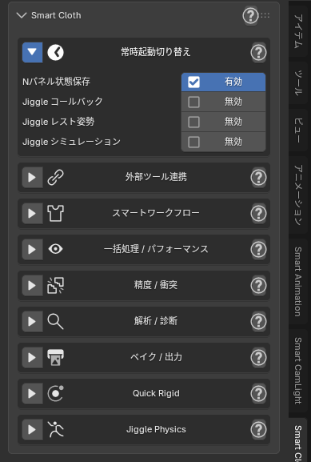
| 表示 | 働き |
|---|---|
| Nパネル状態保存 | オン（最初からオン）にすると、パネルで変えた設定を、その場で設定ファイル（Blender の config の中の Smart_Cloth_Suite の Smart_Cloth_Suite.json）に保存します。オフにすると、シーンを閉じる・切り替える時やプリファレンスの保存の時だけ保存します。 |
| Jiggle コールバック | フレームの移動・再生・レンダーに合わせて揺れを計算する仕組みを入れます。揺れを確かめる・レンダーする・ベイクする間だけオンにし、普段はオフにします。 |
| Jiggle レスト姿勢 | 3D ビューに、揺れの基準の姿勢（レスト姿勢）の目印を描きます。 |
| Jiggle シミュレーション | 3D ビューに、計算中の揺れの位置の目印を描きます。 |
| 有効 / 無効 | 各行の右のボタンです。押すたびにオンとオフが切り替わります。 |
Simply Cloth Studio が入っていて使えるかを表示し、体（衝突の相手）を指定する所です。
場所Smart Cloth パネル > 「外部ツール連携」
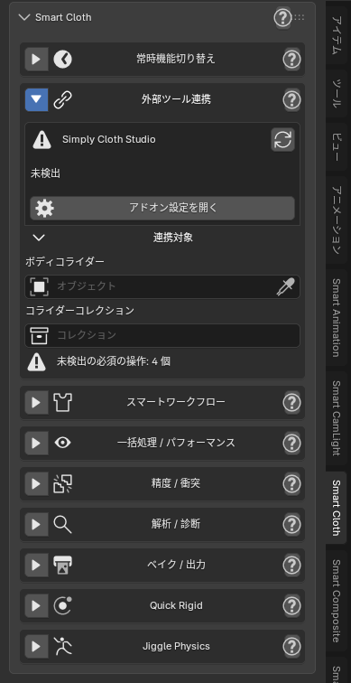
| 表示 | 働き |
|---|---|
| Simply Cloth Studio（2 行目が状態：使用可能 / インストール済み・無効 / 必須の操作が未検出 / 未検出） | Simply Cloth Studio の状態です。「使用可能」なら、連携するボタンがすべて使えます。「インストール済み・無効」は、入っているが有効になっていない状態です。「必須の操作が未検出」は、有効だが必要な操作が見つからない状態です。「未検出」は、入っていない状態です。 |
| 状態を更新（回る矢印のアイコン） | 状態の表示を調べ直します。Simply Cloth Studio を入れた・有効にした後に押します。 |
| 外部バージョン: | 見つかった Simply Cloth Studio の版が分かる時に出ます。 |
| アドオン設定を開く | Blender のプリファレンスを開きます。Simply Cloth Studio を入れる・有効にする時に使います。 |
| コライダー適用 | 「使用可能」の時だけ出ます。「ボディコライダー」と「コライダーコレクション」の物に、Simply Cloth Studio の衝突の設定を付けます。すでに衝突（Collision）の付いている物はそのままにします。物の名前と選択は元に戻します。 |
| 連携対象（折りたたみ）＞ ボディコライダー | 衝突の相手になる体のメッシュです。解析・衝突の調整・重ね着の間隔でも使います。 |
| 連携対象 ＞ コライダーコレクション | 体のほかに衝突させたいメッシュをまとめたコレクションです（無くても構いません）。 |
| 連携対象 ＞ 必須の操作の表示 | 必要な操作がそろっていれば「必須の操作をすべて利用できます。」と出ます。足りない時は「未検出の必須の操作: N 個」と、足りない数が出ます。 |
選んだ服に、Simply Cloth Studio のクロス作成と、SmartCloth Suite の追加の設定を 1 回でまとめて行う所です。1 回の Undo で戻せます。
場所Smart Cloth パネル > 「スマートワークフロー」
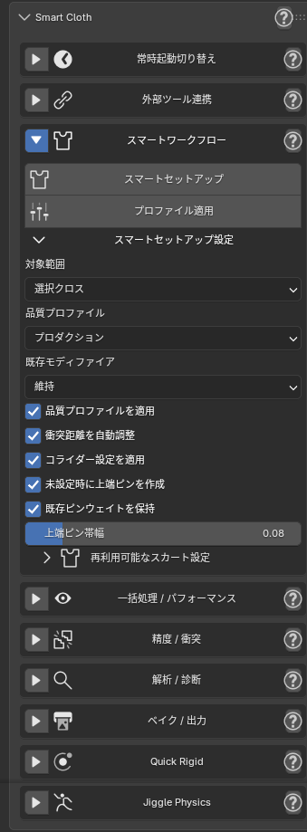
| 表示 | 働き |
|---|---|
| スマートセットアップ | 対象の服に Simply Cloth Studio のクロスを作り、続けて品質・衝突距離・上端のピン・コライダーの設定を行います。すでにクロスのある服は作り直さず、追加の設定だけを行います。 |
| プロファイル適用 | 選んでいる品質プロファイル（計算の細かさ・衝突・時間の速さ・自己衝突の値）だけを、対象のクロスに当てます。Simply Cloth Studio の布の材質の設定は置き換えません。 |
| スマートセットアップ設定（折りたたみ）＞ 対象範囲 | 「アクティブクロス」「選択クロス」「シーン内の全クロス」から選びます。 |
| スマートセットアップ設定 ＞ 品質プロファイル | 「プレビュー」「バランス」「プロダクション」「ヒーロー」から選びます。後ろほど細かく、重くなります。 |
| スマートセットアップ設定 ＞ 既存モディファイア | クロスを作る時に、服にもともと付いているモディファイアを「維持」「適用」「削除」のどれにするかを選びます。 |
| 品質プロファイルを適用 / 衝突距離を自動調整 / コライダー設定を適用 | 「スマートセットアップ」で続けて行う処理です。チェックを入れた物だけ行います。 |
| 未設定時に上端ピンを作成 | 服の上端の帯に、ピン（布を固定する頂点グループ）を作ります。 |
| 既存ピンウェイトを保持 / 上端ピン帯幅 | 上の項目がオンの時に出ます。「既存ピンウェイトを保持」がオンなら、すでにピンの重みがある服はそのままにします。「上端ピン帯幅」は、服の高さのうち上から何割をピンにするかです。 |
スカートなどの服を、ボーンで動かす状態とクロスで動かす状態に切り替えられるように準備する所です。物や骨の名前を決め打ちせず、ここで割り当てます。割当ては服に保存でき、あとで使い回せます。「スマートワークフロー」の中にあり、最初から開いています。
場所Smart Cloth パネル > 「スマートワークフロー」> 「再利用可能なスカート設定」
| 表示 | 働き |
|---|---|
| 衣装メッシュ / アーマチュア | 設定する服のメッシュと、それを動かしているアーマチュア（骨の集まり）を指定します。 |
| スカート骨名（カンマ区切り） / 脚骨名（カンマ区切り） | スカートを動かす骨と、脚の骨の名前を「,」で区切って書きます。 |
| 衝突対象コレクション | クロスがぶつかる体や脚のメッシュをまとめたコレクションです。 |
| 外側補正距離 | 「外側補正」で服を体の外へ押し出す時の距離です。 |
| クロス設定経路 | 「Smart Cloth」は Blender 標準のクロスで準備します（Simply Cloth Studio は不要）。「Simply Cloth Studio」は Simply Cloth Studio のクロス作成を呼びます。 |
| 割当てを確認 | 服・アーマチュア・骨・衝突対象の割当てを、何も変えずに確かめます。 |
| 設定を適用 | 割当てを確かめてクロスを用意します。最初はボーンで動く状態です。 |
| 設定整合 | 割当てとモディファイアの設定が合っているかだけを確かめます。服が体にめり込んでいないことまでは確かめません。 |
| 割当てを保存 | 割当てを服に保存します。ファイルを保存して開き直しても残ります。 |
| 外側補正 | 服だけに、体の外側へ押し出す補正（Shrinkwrap）を付けたり外したりします。めり込みが残る場合があります。 |
| ボーン / クロス | 服をボーンで動かすか、クロスで動かすかを切り替えます。スキンのウェイトは変えません。今の状態のボタンが押された表示になります。 |
| Simply に載せ替え | 服のいまのクロスを、Simply Cloth Studio のクロスに置き換えます。値・固定・衝突対象・切り替えは引き継ぎ、元のクロスは記録しておきます。Simply Cloth Studio が必要です。 |
| 元のクロスに戻す | 載せ替えを取り消し、記録しておいた元のクロスを作り直します。載せ替えた服の時だけ押せます。 |
| 焼きと交差の確認 | 服のクロスを焼き（ベイク）、体の内側に入った頂点の最大の数、最も低い点の高さなどを報告します。焼きは残し、動かし方とフレームは元に戻します。 |
実例スカートをボーンとクロスで切り替える（筒のスカートと骨で試した様子）
「設定を適用」でスカートを切り替えられるようにすると、ボタン 1 つで、骨のとおりに動く状態と、布として遅れて動く状態を行き来できます。スキンのウェイトは変わりません。
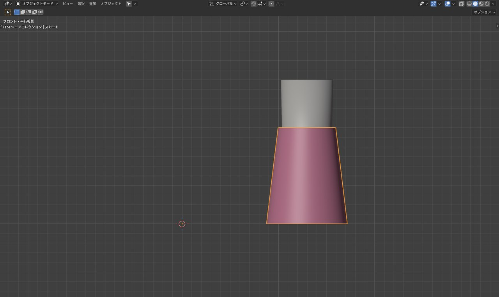
見どころ：体が右へ動いているフレーム 16 の比べです。「ボーン」では、スカートは骨のとおりに形を保ったまま体と一緒に動きます。「クロス」では、腰の所だけが付いて行き、裾は布として左に遅れます。
服の中の布の部分だけをクロスにし、帯や飾りはボーンのまま動かすための所です。元の服から、布と飾りの補助の物を作って使います。「再利用可能なスカート設定」の中にあります。
場所「再利用可能なスカート設定」> 「布部分 / 保持する帯・装飾」
| 表示 | 働き |
|---|---|
| 布の選択方法 | 布の部分を「マテリアルスロット」で選ぶか「頂点グループ」で選ぶかを決めます。 |
| 布の材質スロット / 布の頂点グループ / 選択ウェイト | 布の部分を決める材質スロットの番号（0 から数えます）、または頂点グループとその重みのしきい値です。選択方法によって出る欄が変わります。 |
| 支持アーマチュア / 支持ボーン | 布の固定する所を支える、今あるアーマチュアと骨を指定します。骨に拘束は足しません。 |
| 固定頂点グループ / 上端固定の高さ割合 | 布を固定する頂点グループです。空の時は、布の上から何割の高さを固定するかで決めます。 |
| 布の総重量 (kg) / 布の引張剛性 / 布の曲げ剛性 | 布全体の重さと、伸びにくさ・曲がりにくさです。 |
| 布部分を確認 | 布の面と、残す飾りの面の数を、何も変えずに数えます。 |
| 布シミュレーションを作成 | 布と飾りの補助の物を作り、布だけに Simply Cloth Studio のクロスを作ります。 |
| 設定整合 | 補助の物・材質・UV・切り替えの状態・固定・重さの設定が合っているかだけを確かめます。 |
| ボーン / クロス | 元の服の見た目と、布だけのクロス＋飾りを切り替えます。 |
| 布シミュレーションを解除 | ボーンの表示に戻し、この設定で作った補助の物だけを消します。 |
焼いたクロスの動きを読み取り、衣装のボーンの動きとして写し取る所です。元のアニメーションは残し、選んだ骨だけを焼いた動きで上書きします。「布部分 / 保持する帯・装飾」の中にあります。
場所「布部分 / 保持する帯・装飾」> 「クロスから衣装ボーンへ」
| 表示 | 働き |
|---|---|
| ベイク済みクロスメッシュ | 焼いたクロスを持つメッシュです。 |
| 対象アーマチュア | 衣装のボーンを持つアーマチュアです。 |
| 開始フレーム / 終了フレーム | 読み取るフレームの範囲です。焼いたクロスの範囲の中で決めます。 |
| 確認 | 選んだ骨の列とクロスの対応を、結果を作らずに確かめます。 |
| ボーンへ焼付け | 焼いたクロスを範囲全部読み取ってから、骨の動きを作ります。 |
| 標準 / クロス焼付け | 元の動きと、焼き付けた動きを切り替えます。 |
| ボーン焼付けを解除 | このアドオンが作った焼付けだけを消します。元のアニメーションは残ります。 |
複数のクロスへ品質プロファイルをまとめて当てたり、作業中だけ軽い表示にしたりする所です。軽くする前に元の値を記録するので、元に戻せます。
場所Smart Cloth パネル > 「一括処理 / パフォーマンス」
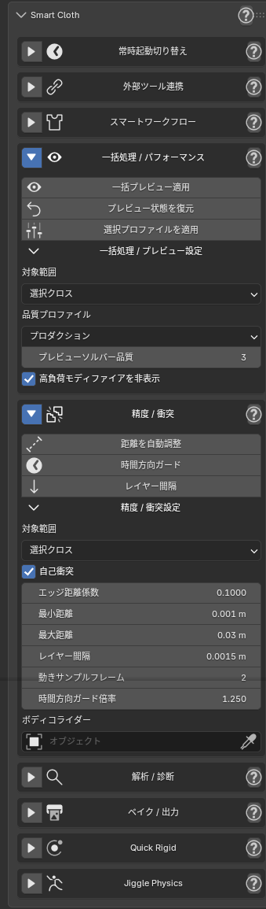
| 表示 | 働き |
|---|---|
| 一括プレビュー適用 | クロスの品質を「プレビューソルバー品質」まで下げ、衝突の品質を下げて自己衝突を切り、重いモディファイアを隠して、画面を軽くします。 |
| プレビュー状態を復元 | 記録しておいた品質・衝突・モディファイアの表示を元に戻します。 |
| 選択プロファイルを適用 | 選んでいる品質プロファイルを、対象範囲のクロスに当てます。 |
| 一括処理 / プレビュー設定（折りたたみ）＞ 対象範囲 / 品質プロファイル | どのクロスに、どの品質を当てるかを選びます。 |
| プレビューソルバー品質 | 軽くしている間だけ使うクロスの品質の値です。 |
| 高負荷モディファイアを非表示 | オンにすると、細分化（Subdivision）・マルチレゾ・ジオメトリノード・厚み付け（Solidify）・スムーズ系のモディファイアを画面で一時的に隠します。 |
実例重い細分化を一時的に隠して、作業中の画面を軽くする（細分化モディファイアの付いた布で試した様子）
「一括プレビュー適用」を押すと、クロスの計算の品質を下げ、細分化などの重いモディファイアを画面で隠して軽くします。元の状態は記録され、「プレビュー状態を復元」で戻せます。

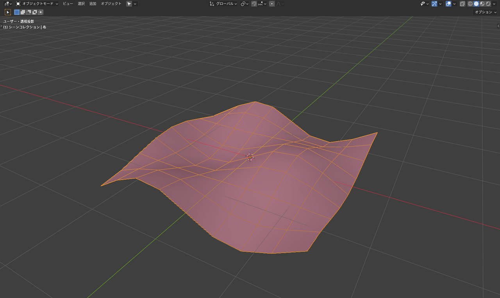
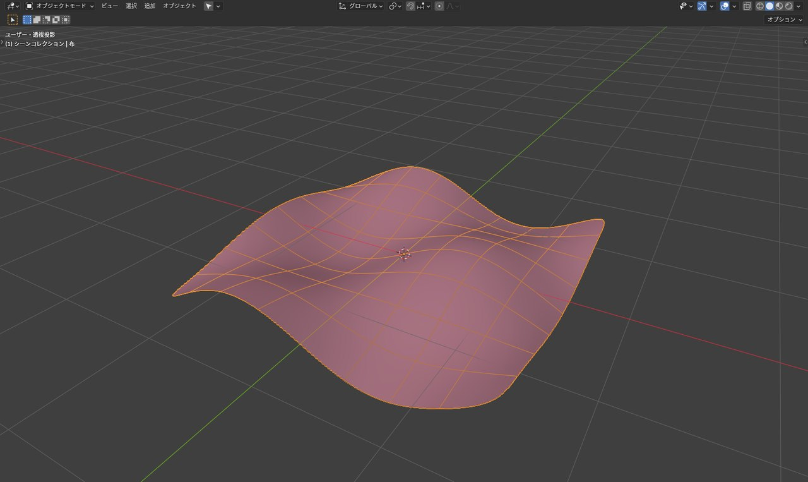
見どころ：細分化でなめらかだった布が、適用の後は元の粗い形になり、縁や面が角ばって見えます。復元すると、なめらかな形に戻ります。
メッシュの細かさに合わせて衝突距離を決めたり、動きの速さや重ね着に合わせて余裕を足したりする所です。どれもボタンを押した時だけ動きます。
場所Smart Cloth パネル > 「精度 / 衝突」
| 表示 | 働き |
|---|---|
| 距離を自動調整 | メッシュの辺の平均の長さから、衝突と自己衝突の距離を計算して入れます。形や大きさを変えた後に押します。 |
| 時間方向ガード | 今のフレームから「動きサンプルフレーム」だけ先の動きを調べ、速く動く分だけ衝突の余裕を足します。調べた後は元のフレームに戻します。 |
| レイヤー間隔 | 重ね着の服を体に近い順に並べ、外側の服ほど衝突距離を足します。 |
| 精度 / 衝突設定（折りたたみ）＞ 対象範囲 | どのクロスに効かせるかを選びます。 |
| 自己衝突 | 布が自分自身とぶつかる計算をするかどうかです。 |
| エッジ距離係数 | 辺の平均の長さに掛けて衝突距離を出す倍率です。 |
| 最小距離 / 最大距離 | 自動で出す衝突距離の下限と上限です。 |
| レイヤー間隔（欄） | 外側の服 1 枚ごとに足す距離です。 |
| 動きサンプルフレーム / 時間方向ガード倍率 | 時間方向ガードが先を調べるフレーム数と、調べた動きの量に掛ける倍率です。 |
| ボディコライダー | 体のメッシュです。「外部ツール連携」と同じ設定です。 |
クロスの問題を見つけやすくするための頂点グループを作り、設定の点検（プリフライト）を行う所です。トポロジー（メッシュのつながり）の控えめな直しもできます。
場所Smart Cloth パネル > 「解析 / 診断」
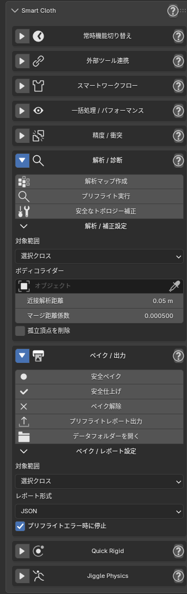
| 表示 | 働き |
|---|---|
| 解析マップ作成 | メッシュの形は変えずに、曲がりのきつい所・ピンの候補・体との近さを表す頂点グループを作ります。 |
| プリフライト実行 | クロスのモディファイア・メッシュ・変形・ピン・キャッシュ・品質を点検し、詳しいレポートを書き出します。 |
| 安全なトポロジー補正 | ほぼ同じ位置の頂点だけをまとめ、必要なら孤立した頂点を消し、法線（面の向き）を直します。シェイプキーのあるメッシュは飛ばします。 |
| 解析 / 補正設定（折りたたみ）＞ 対象範囲 / ボディコライダー | 点検する物と、体のメッシュです。 |
| 近接解析距離 | 体との近さの頂点グループで、重みが 0 になる距離です。体に近いほど重みが大きくなります。 |
| マージ距離係数 | ほぼ同じ位置の頂点をまとめる時に、辺の平均の長さに掛けるごく小さい倍率です。 |
| 孤立頂点を削除 | オンにすると、どの辺にもつながっていない頂点だけを消します。 |
実例スカートの筒から、ピンにする場所の候補を色で出す（スカートに見立てた上下の開いた筒で試した様子）
「解析マップ作成」を押すと、布の形を調べて、上端のピンの候補や、曲がりが強い所を頂点グループ（重みの色）にします。ピンの頂点グループを手で塗る前の下書きに使えます。
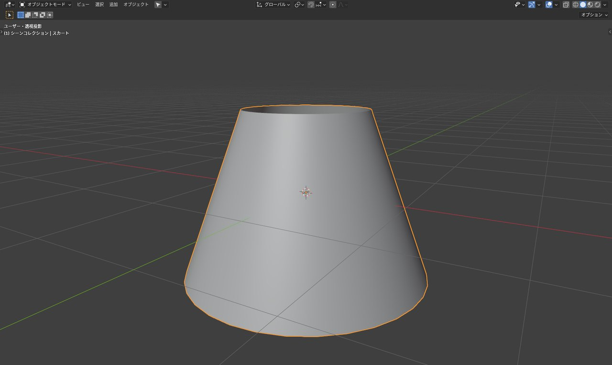
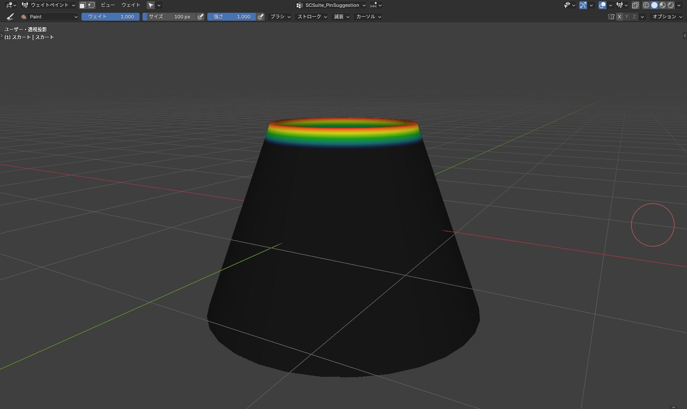
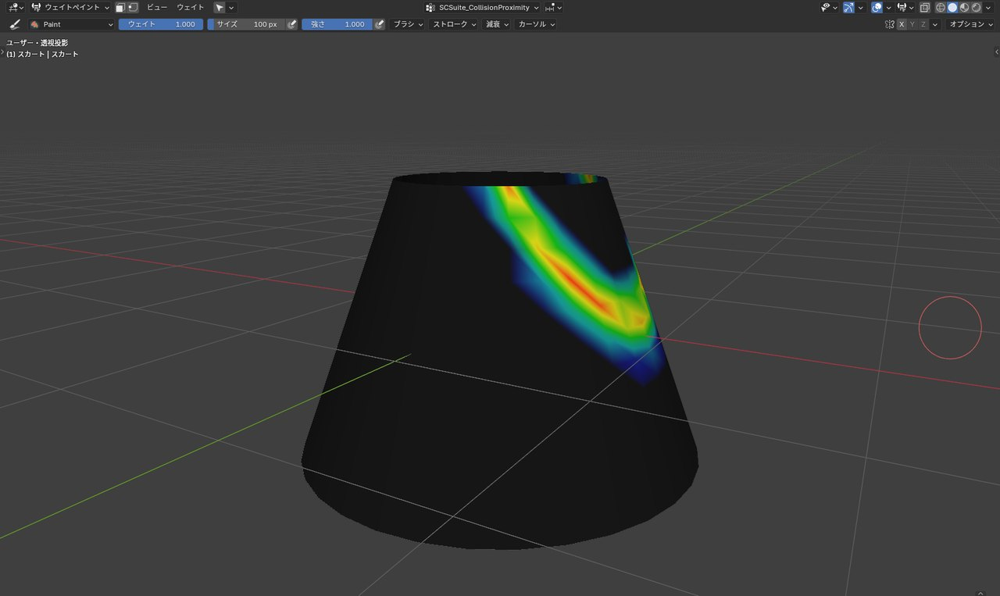
見どころ：赤いほど重みが大きい所です。「SCSuite_PinSuggestion」では筒の上端の帯が赤くなり、ピン（固定する所）の候補が分かります。「SCSuite_CollisionProximity」では、中の体（図では隠しています）に近い所に色の帯が出ます。形は変わりません。
実例ばらばらの面をつなぎ直して、なめらかな陰影に戻す（面がすべて切り離されたスザンヌで試した様子）
読み込んだ服などで、同じ位置に頂点が重なり、面がつながっていないことがあります。「安全なトポロジー補正」は、ほぼ同じ位置の頂点だけをまとめて、面をつなぎ直します。
見どころ：前は面の境目ごとに陰影が切れて、角ばって見えます。後は頂点がまとまって面がつながり、なめらかな陰影になります。形そのものは動きません。
点検（プリフライト）をしてから、クロスのベイク（動きを計算して記録すること）や、Simply Cloth Studio の仕上げを行う所です。点検のレポートも保存します。
場所Smart Cloth パネル > 「ベイク / 出力」
| 表示 | 働き |
|---|---|
| 安全ベイク | 対象を点検してから、まだ焼いていないクロスを 1 つずつ焼きます。Esc か右クリックで止めると、1 体の計算が終わった区切りで止まり、元の状態に戻します。 |
| 安全仕上げ | 今のフレームで見えている形をメッシュに確定します。ベイク後に当たりを動かしても、見えていた形のまま確定します。未ベイクのクロスは先にベイクします。Cloth より前のモディファイアは形に含めて外します。Cloth の名前は問いません。 |
| ベイク解除 | 対象のクロスの記録（ポイントキャッシュ）を消します。消した後に途中のフレームへ飛ぶと、計算が抜けて形が崩れます。もう一度「安全ベイク」を押すと記録し直します。 |
| プリフライトレポート出力 | 点検をしてレポートを書き出します。 |
| データフォルダーを開く | 設定ファイルとレポートの入ったフォルダー（Blender の config の中の Smart_Cloth_Suite）を開きます。 |
| ベイク / レポート設定（折りたたみ）＞ 対象範囲 | ベイクする物の範囲です。 |
| レポート形式 | 点検のレポートを、JSON（機械で読む形）とテキスト（人が読む形）のどちらで書き出すかを選びます。最初は JSON です。 |
| プリフライトエラー時に停止 | オン（最初からオン）にすると、点検でエラーが見つかった時にベイク・仕上げを止めます。 |
| 最新レポート: | 最後に書き出したレポートの場所が出ます。 |
実例点検してから、布の動きを焼く（布と球で試した様子）
「安全ベイク」は、対象のクロスを点検してから焼きます。点検でエラーが無ければ、布の動きが記録され、好きなフレームへ飛んでも同じ形が出ます。
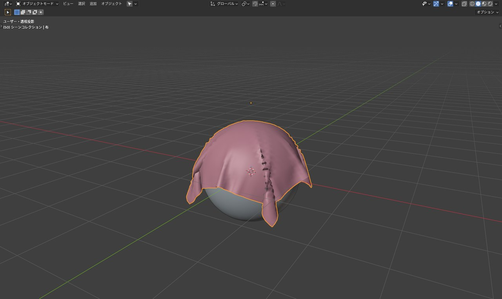
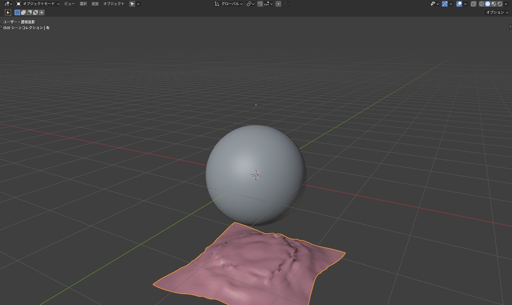
見どころ：ベイクの前の布は平らです。焼いた後は、後ろのフレームへ飛ぶだけで、球にかかった形がすぐに出ます。「ベイク解除」で記録を消してから同じフレームへ飛ぶと、途中の計算が抜けるので、布は球を通り抜けて下に落ちた形になります。もう一度「安全ベイク」を押すと、球にかかった形に戻ります。
Blender の剛体（物理で落ちる・転がる・ぶつかる固い物）を手早く付けて調整する所です。
場所Smart Cloth パネル > 「Quick Rigid」
| 表示 | 働き |
|---|---|
| クイックメニュー | Quick Rigid のメニューを開くボタンの集まりです。 |
| 剛体セットアップ | 剛体を付ける・外すボタンの集まりです。 |
| アクティブ剛体 | 選んでいる物に剛体が付いている時だけ出ます。値を直接変えられます。 |
| プリセット / ベイク | 値の保存と、剛体の計算の記録を扱います。 |
| Quick Rigid 全コマンド | ほかの見出しに入っていない操作です。 |
Quick Rigid のメニューを呼び出す所です。
場所「Quick Rigid」> 「クイックメニュー」
| 表示 | 働き |
|---|---|
| Quick Rigid メニューを開く | Quick Rigid のメインのメニューを開きます。 |
| メイン設定 / 物理プロパティ / シミュレーション設定 / プリセット / ベイクオプション | それぞれの設定をまとめたメニューを開きます。 |
選んだメッシュに剛体を付けたり外したりする所です。
場所「Quick Rigid」> 「剛体セットアップ」
| 表示 | 働き |
|---|---|
| アクティブを追加 | 選んでいるメッシュ全部に、力や衝突で動く剛体（アクティブ）を付けます。 |
| パッシブを追加 | 選んでいるメッシュ全部に、自分では動かず、ぶつかる相手になる剛体（パッシブ）を付けます。床などに使います。 |
| 設定をコピー | アクティブな物の剛体の設定を、選んでいるほかの物にコピーします。 |
| 剛体を削除 | アクティブな物（最後に選んだ 1 つ）の剛体を外します。 |
実例積み木に剛体を付けて、床へ落とす（床と 3 つの立方体で試した様子）
立方体を選んで「アクティブを追加」、床を選んで「パッシブを追加」を押すだけで、物理で落ちてぶつかる剛体になります。再生すると、上の立方体が落ちて、下の立方体や床にぶつかります。
見どころ：フレーム 1 では 3 つの立方体がどれも宙に浮いています。再生すると全部が落ち、赤は床に、緑は赤の上に乗り、青ははじかれて床へ落ちます。床（パッシブ）は動かず、ぶつかる相手になります。
選んでいる物の剛体の値を直接変える所です。剛体が付いている物を選んでいる時だけ出ます。
場所「Quick Rigid」> 「アクティブ剛体」
| 表示 | 働き |
|---|---|
| タイプ / 形状 | 「アクティブ」（動く）か「パッシブ」（動かない相手）か、衝突に使う形（「凸包」・箱・球など）を選びます。 |
| アニメーション | オンにすると、キーフレームの動きで剛体を動かします。 |
| 質量 / 摩擦 / 反発 | 重さ、すべりにくさ、はね返りの強さです。 |
| リニア減衰 / 角度減衰 | 移動と回転の勢いが弱まる速さです。 |
剛体の値をプリセット（保存した設定）として保存し、物理の計算を記録する所です。
場所「Quick Rigid」> 「プリセット / ベイク」
| 表示 | 働き |
|---|---|
| プリセット追加 | 選んでいる物の剛体の値に名前を付けて保存します（剛体の付いた物を選んでいる時に押せます）。名前を空にして保存すると「プリセット名を入力してください。」と出て、保存されません。 |
| プリセットを適用 | 押すと保存済みの一覧が出ます。選ぶと、選んでいる物にその値を当てます。保存が無い時は「利用可能なプリセットはありません」と出ます。「クイックメニュー」の「プリセット」からも選べます。 |
| プリセット削除 | 押すと保存済みの一覧が出ます。選ぶと、そのプリセットを消します。保存が無い時は「利用可能なプリセットはありません」と出ます。 |
| 全ダイナミクスをベイク | シーンの物理の計算をすべて記録します。 |
| 全ベイク解除 | 記録した物理の計算をすべて消します。 |
実例はねる設定をプリセットにして、別の箱に当てる（床と 2 つの立方体で試した様子）
剛体の値に名前を付けて保存すると、別の物に同じ値を当てられます。ここでは、よくはねる青い箱の値を保存して、赤い箱に当てます。
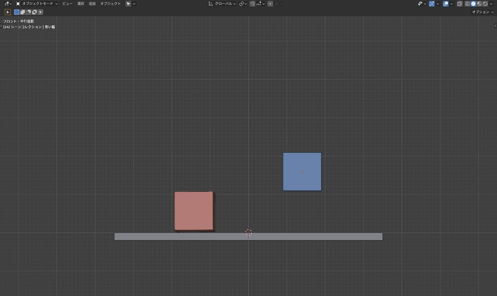
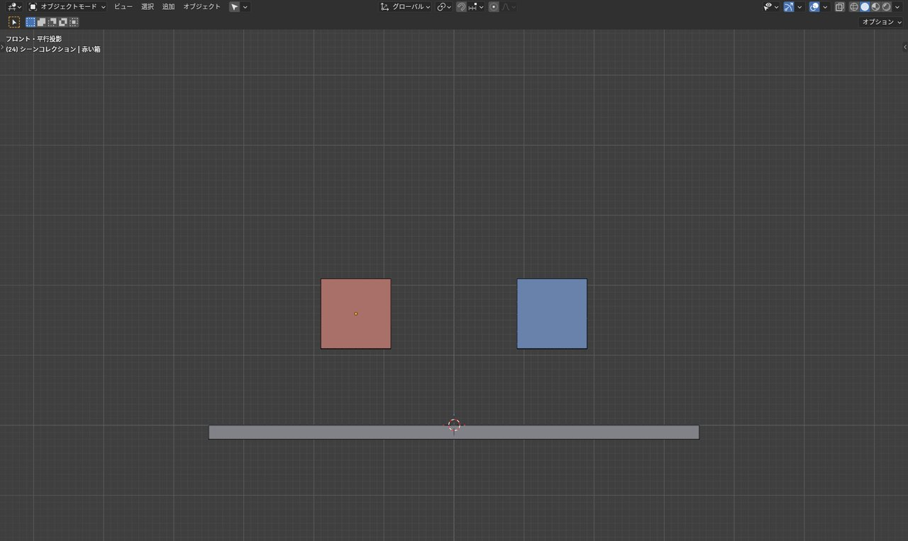
見どころ：当てる前は、青い箱だけが大きくはね、赤い箱は床に近い所にいます。当てた後は、赤い箱も青い箱と同じ高さまではねます。
ほかの見出しに入っていない Quick Rigid の操作です。
場所「Quick Rigid」> 「Quick Rigid 全コマンド」
| 表示 | 働き |
|---|---|
| アニメーション切替 | アクティブな剛体の「アニメーション」のオン・オフを切り替えます。オンにすると物理で落ちなくなり、キーのとおりに動きます。もう一度押すと、物理で動く状態に戻ります。 |
| ショートカット設定をコピー | Quick Rigid のメニューをショートカットで開くために、プリファレンスの「キーマップ」へ自分で登録する情報をクリップボードへコピーします。キーマップは変えません。 |
実例1 つの箱だけ物理で落ちないようにする（床と 2 つの箱で試した様子）
「アニメーション切替」を押すと、選んでいる剛体は物理で落ちなくなり、キーのとおりに動く物になります。ここでは緑の箱だけを切り替えます。
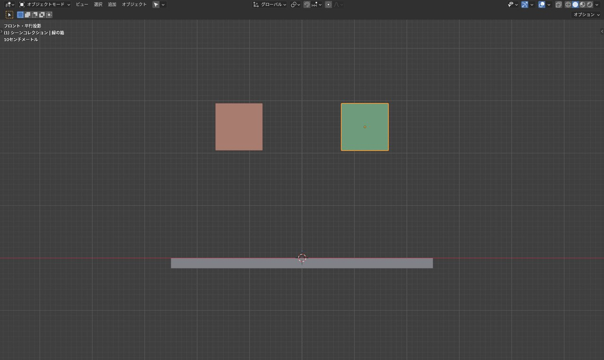
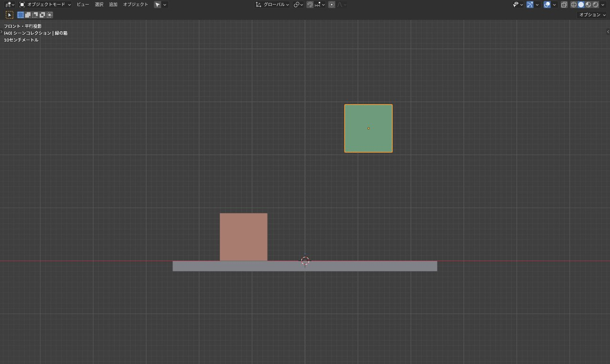
見どころ：どちらの箱もアクティブの剛体ですが、再生すると赤の箱だけが床へ落ち、緑の箱は宙に残ります。もう一度「アニメーション切替」を押すと、緑の箱も落ちるようになります。
骨に二次的な揺れ（動きに遅れてゆれる動き）を付ける所です。シーン・アーマチュア・ボーンの順に設定します。
場所Smart Cloth パネル > 「Jiggle Physics」
| 表示 | 働き |
|---|---|
| シーン設定 | シーン全体の揺れと風の設定です。 |
| アーマチュア | 選んでいるアーマチュアの揺れのオン・オフです。 |
| アクティブボーン | 選んでいる骨の揺れの値です。 |
| 補助 / ベイク / プリセット | コピー・選択・ベイク・プリセットなどの補助のボタンです。 |
| Jiggle 全コマンド | ほかの見出しに入っていない操作です。 |
シーン全体の揺れの計算と、風の設定をする所です。
場所「Jiggle Physics」> 「シーン設定」
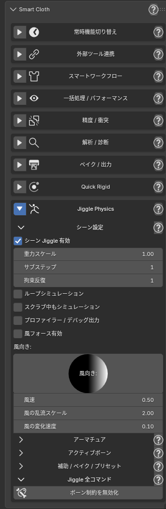
| 表示 | 働き |
|---|---|
| シーン Jiggle 有効 | シーンの揺れの計算をオン・オフします。最初はオフです。 |
| 重力スケール | シーンの重力に掛ける倍率です。1.0 ならシーンの重力のままです。 |
| サブステップ / 拘束反復 | 1 フレームを何回に分けて計算するか、骨のつながりを何回整えるかです。多いほど安定し、重くなります。 |
| ループシミュレーション | タイムラインがくり返しても、揺れの計算を続けます。オンの間は、最初のフレームへ戻っても計算の状態はリセットされません。 |
| スクラブ中もシミュレーション | タイムラインをドラッグしている間も計算します。 |
| プロファイラー / デバッグ出力 | 計算の時間などを調べるための機能をオンにします。 |
| 風フォース有効 / 風向き / 風速 / 風の乱流スケール / 風の変化速度 | 風を吹かせるかどうかと、その向き・強さ・ゆらぎを決めます。 |
選んでいるアーマチュアの揺れを切り替える所です。
場所「Jiggle Physics」> 「アーマチュア」
| 表示 | 働き |
|---|---|
| アーマチュアの名前 | アーマチュアを選んでいる時、その名前の行の下に、次の 3 つのボタンが並びます。 |
| アーマチュア Jiggle 有効 | このアーマチュアの揺れをオンにします。 |
| ミュート | このアーマチュアの揺れを一時的に切ります。 |
| 固定 | 揺れの計算を止めます。ベイクした後に使う状態です。 |
ポーズモードで選んでいる骨の揺れの値を決める所です。
場所「Jiggle Physics」> 「アクティブボーン」
| 表示 | 働き |
|---|---|
| ボーン Jiggle を有効化 | この骨を揺らします。 |
| 角度弾性 / 長さ弾性 / ルート弾性 | 元の向き・元の長さ・根元の骨に戻ろうとする強さです。大きいほど固くなります。 |
| 重力 / ブレンド / 空気抵抗 / 摩擦 | シーンの重力に掛ける倍率、揺れをどれだけ混ぜるか（0 で揺れなし、1 で全部）、空気による勢いの弱まり、元の姿勢へ戻る速さです。 |
| 衝突半径 | ぶつかりを調べる時の骨の太さです。 |
| パラメーターキーフレームを削除 | 選んだ骨の揺れの値に付いたキーフレームだけを消します。揺れの設定は残ります。「シーン Jiggle 有効」がオンで、ポーズモードで、アーマチュアにアクションがある時に押せます。 |
| 選択ボーンの接続を解除 | つながった骨は長さの伸び縮み（長さ弾性）が効かないため、選んだ骨のつながりを外します。 |
実例頭を動かすと、髪の房が遅れて揺れる（スザンヌの頭と髪の房で試した様子）
骨に揺れを付けると、キーを打っていない骨が、親の動きに遅れてゆれます。ここでは頭だけにキーがあり、髪の房の骨にはキーがありません。
見どころ：止まっている時は房がまっすぐ下がっています。頭が右へ動く間は、房の先が左へ遅れて流れます。頭が止まった後も、房はすぐには戻らず、少しずつ下へ戻って来ます。
揺れの設定のコピーやベイク、プリセットを扱う所です。ポーズモードで使います。
場所「Jiggle Physics」> 「補助 / ベイク / プリセット」
| 表示 | 働き |
|---|---|
| 設定を選択ボーンへコピー | アクティブな骨の揺れの設定を、選んでいるほかの骨へコピーします。アクティブな骨の揺れが有効で、骨を 2 本以上選んでいる時に押せます。 |
| 有効ボーンを選択 | 揺れが有効な骨を選びます。 |
| プリロール | 焼く前に、最初のフレームで先に計算するフレームの数です。最初は 30 で、重力で下がった落ち着いた形から焼き始めます。0 にすると、再生した時と同じ形から焼きます。 |
| 現在のアクションを上書き | オンにすると、新しいアクションを作らず、今のアクションを焼いた物に置き換えます。名前はそのままで、元のキーは焼いたキーに変わります（Ctrl+Z で戻せます）。オンの間は「現在のアクションを NLA へ移動」は使えません。設定は今のシーンにだけ残り、新しいシーンには引き継がれません。 |
| 現在のアクションを NLA へ移動 | オンにすると、元のアクションを NLA のストリップに入れて残し、焼いた新しいアクションをその上に載せます。設定は今のシーンにだけ残り、新しいシーンには引き継がれません。 |
| Jiggle をベイク | 再生の範囲を計算して、親の骨に遅れる揺れも含めて、再生で見える動きを、揺れを有効にした骨のキーにします。普段は元のキーを写した新しいアクションに焼くので、動かしている親の骨のキーも残ります。アーマチュアの揺れが有効で、ミュートしていない時に、ポーズモードで押せます。焼いた後は「アーマチュア」の「固定」がオンになります。計算中は Esc か右クリックで止められ、止めると元の状態に戻ります。 |
| 物理をリセット | 揺れの計算の状態を、今のフレームの姿勢に合わせて最初に戻します。キーの無い骨や項目は、揺れで動く前の値に戻します。「ループシミュレーション」がオフなら、最初のフレームへ戻った時に同じことが自動で行われるので、途中のフレームから試し直す時に押します。 |
| 計測結果を出力 | 計算の時間などの計測結果を出します。「シーン設定」の「シーン Jiggle 有効」と「プロファイラー / デバッグ出力」がオンの時に押せます。 |
| プリセットを保存 | アクティブな骨の揺れの設定に名前を付けて、プリセットとして保存します。「シーン Jiggle 有効」「アーマチュア Jiggle 有効」がオンで、ポーズモードで、アクティブな骨の揺れが有効な時に押せます。 |
| Jiggle ボーンプリセット | 保存したプリセットや、あらかじめ用意されたプリセット（髪・尻尾・ロープ・硬め・胸の 5 種類）を選んで当てるメニューです。 |
実例揺れをキーフレームに焼く（スザンヌの頭と髪の房で試した様子）
「Jiggle をベイク」を押すと、再生で見える揺れを、揺れを有効にした骨のキーフレームにします。元のキーを写した新しいアクションに焼くので、動かしている頭のキーも残ります。
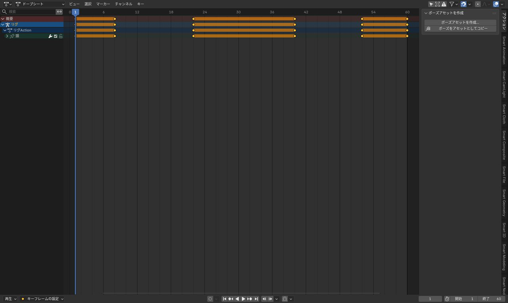
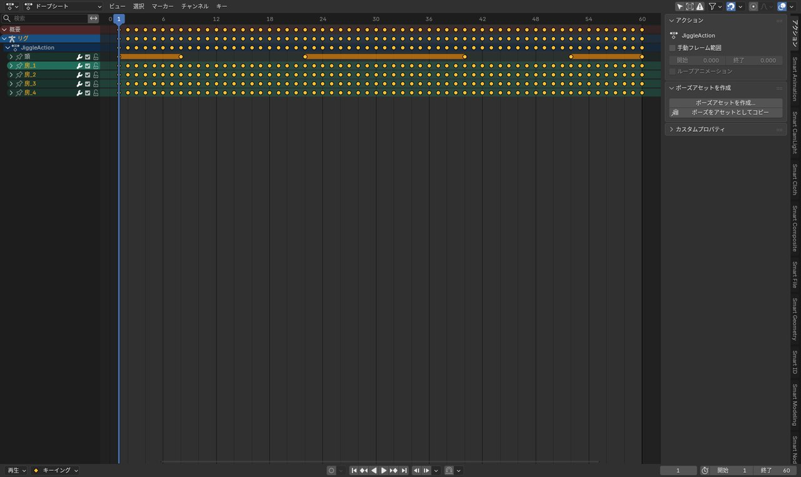
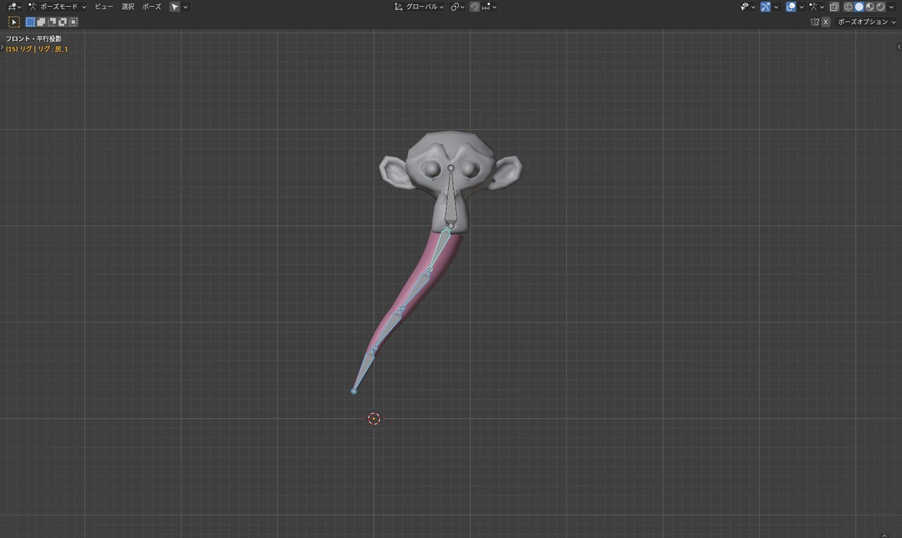
見どころ：ベイクの前は、キーがあるのは頭の骨の 6 か所だけです。ベイクの後は、房の骨の行に、再生の範囲の全部のフレームのキーが並びます。焼いた後は「アーマチュア」の「固定」がオンになり、キーのとおりに動きます。頭の動きに遅れる揺れもキーに入るので、焼いた後のフレーム 15 でも、再生の時と同じように房の先が左へ遅れています。
実例元のアクションを NLA に残して、揺れを焼く（スザンヌの頭と髪の房で試した様子）
「現在のアクションを NLA へ移動」をオンにして焼くと、元のアクションは NLA のストリップに入って残り、焼いた新しいアクションがその上に載ります。
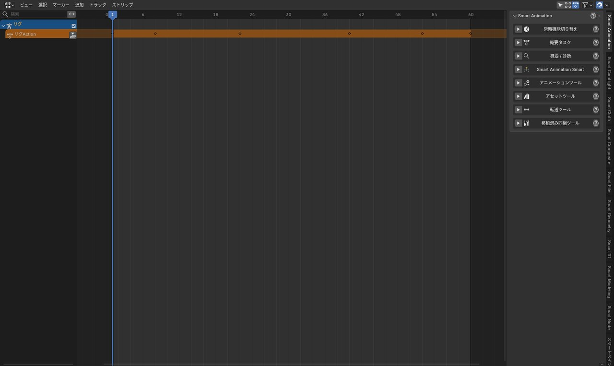
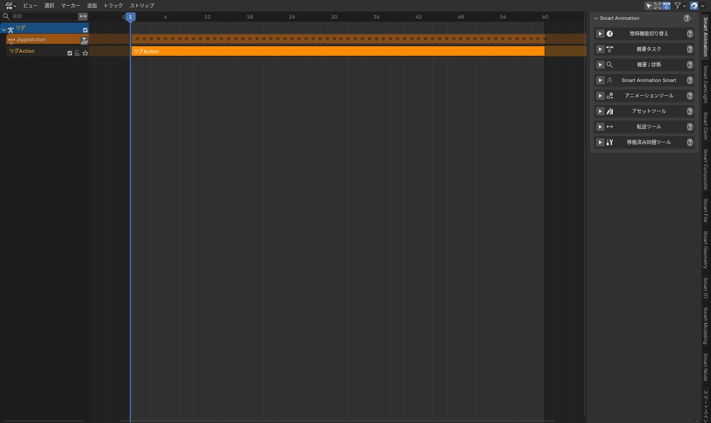
見どころ：焼く前の行は「リグAction」の 1 行だけです。焼いた後は、下に元のアクションの名前のトラックとストリップができ、その上に焼いた「JiggleAction」が載ります。元の動きが消えないので、最初のフレームで上のアクションを外し、「アーマチュア」の「固定」をオフにすると、元の動きと揺れの計算に戻せます。
ほかの見出しに入っていない Jiggle の操作です。
場所「Jiggle Physics」> 「Jiggle 全コマンド」
| 表示 | 働き |
|---|---|
| ボーン制約を無効化 | 制約（コンストレイント）は揺れの後にかかり、不自然な動きの元になるため、選んだ骨の制約をまとめて無効にします。 |
Simply Cloth Studio を使い、服のクロスを 1 回で準備し、問題がないか確かめてから焼く。
結果：服にクロスが付き、点検でエラーが無ければ焼かれます。レポートは「データフォルダーを開く」で見られます。
ポーズ付けの間だけクロスの計算と表示を軽くし、あとで元に戻す。
結果：クロスの品質とモディファイアの表示が、軽くする前の状態に戻ります。
Simply Cloth Studio が無くても、スカートの動かし方を切り替えられるようにする。
結果：スカートの動かし方を、ボタン 1 つで切り替えられます。割当ては服に保存されます。
床の上に物を落とす動きを作る。
結果：物が床に落ちる動きが記録されます。やり直す時は「全ベイク解除」を押します。
髪の骨に二次的な揺れを付けて、再生で確かめ、骨のキーフレームにする。
結果：再生で髪が遅れて揺れます。ベイクすると、髪の骨の全部のフレームにキーが打たれ、再生で見た揺れがそのままキーになります。
アドオンが出ない・日本語にならない、など全部のアドオンに共通のことは、全体仕様書の「困った時」を見てください。
| アドオン | SmartCloth Suite（smart_cloth_suite） |
|---|---|
| 版 | 1.0.0 |
| ZIP | SmartClothSuite_1.0.0.zip |
| 大きさ | 270,524 バイト |
| SHA256 | da7ceb56fa8e0afec8f038c9cd612246007ab7d0f22c034e618266d8ce555162 |
SmartCloth Suite 解説書 v1.0.0 ／ 2026-11-18 作成